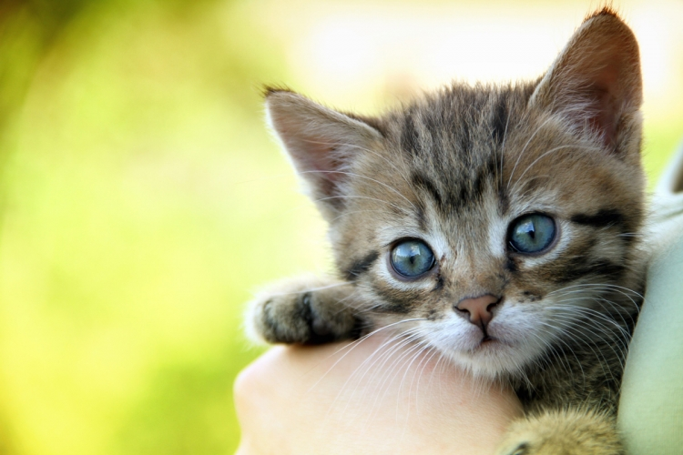

A macskák testalkatának behatóbb ecsetelését bízvást elhagyhatjuk, mert az erőteljes, de mégis kecses test, gömbölyű, vastagnyakú fej, középmagas végtagok, vastag mancsok, hosszú farok és puha bunda, a környezettel mindig teljes összhangzásban álló, szép színük általánosan ismert jellemvonásaik. Fogazata igen erőteljesen fejlett, félelmet gerjesztő. Gyengén hajlott, kúpalakú szemfogai nagyok, messze kiemelkednek a fogsorból, hatásuk megsemmisítő; mellettük egészen eltörpülnek az aránylag apró metszőfogak. Zápfogaik élesek, tarajosak. Teljes összhangban áll a fogazattal a vastag, húsos, finom szarunemű, hátrafelé irányult tüskékkel vértezett sajátságos nyelv. Ezek a tüskék oly erősek, hogy huzamosabb nyalogatással a vékonyabb bőrt véresre horzsolják; egyébként tényleg az a hivatásuk, hogy a táplálék szétmorzsolásában közreműködjenek. A fogazathoz hasonlóan félelmetesek karmaik, amelyek úgy a préda megszerzésében, mint a védekezésnél elsőrendű szerepet játszanak. A macskák lába széles, lekerekített, ami a visszahajlított harmadik ujjperccel áll összefüggésben. Visszahúzott helyzete miatt ez az ujjperc nem is érinti a talajt, amivel viszont a felette hegyes és hatalmas méretű karmokat óvja a kopástól. Nyugalmi állapotban, vagy járásnál a karmot egy háti és egy oldali rugalmas szalag tartja szokásos helyzetében, míg felizgatva, vagy a használat pillanatában a hajlító izom segítségével kinyujtja a visszahajlított karmos ujjpercet. Ez a lábalkotás az oka, hogy a macska lábnyomában a karmok nyomára sohasem akadunk, a nesztelen járást pedig puha, igen gyakran sűrűn szőrrel borított talpvánkosainak köszönheti.
A mai macskák fogazata 28–30 fogból áll, melyeket a következő fogképletben csoportosítunk: 3. 1. 2–3. 1. - 3. 1. 2. 1. Végtagcsontjaik általában igen erőteljesen fejlettek, kulcscsontjuk azonban elsatnyult. Mellső lábuk 5, a hátsó 4 ujjat visel. A bélcsatorna hossza a test 3–4, sőt ötszörösét is eléri. A nőstény 4 emlőt visel a hasán, vagy további négyet a mellén.
A macskafélék (Felidae) családját 5 alcsaládra kell felbontanunk. Ezek közül 4 ma is él, az ötödik azonban (Pseudaelurinae) még a földtörténeti Harmadkor derekán – a Pliocénkorszakban – kihalt. A 4 élő alcsalád: nagymacska-formák (Pantherinae); kardfogúmacska-formák (Neofelinae); kismacska-formák (Felinae) és gepárd-formák (Acinonychinae).
Valamennyi közt a legkezdetlegesebb fejlettségi fokon a kismacskák állanak, ezeket mintegy a többi 4 csoport kiinduló pontjának tekinthetjük. Termetre a legkisebbek, ami szintén kezdetleges származástani fejlettség jele, rövid végtagjaik még az ősi, fán lakó életmódhoz alkalmazkodottak; fogazatuk a legegyszerűbb, de egyúttal a legkezdetlegesebb is, életmódjuknak megfelelően apró állatok, leginkább madarak szétmarcangolására való; arci részük az aránylag gyenge fogazatnak megfelelően rövid, a hatalmas agykoponyához viszonyítva igen kicsi. Ez a magyarázata annak, hogy a kismacskák feje nagy agykoponyájuk ellenére is igen kicsinek látszik. Ebből az ősi csoportból – illetve ennek a földtörténeti Harmadkor első felében élt alakjaiból – fejlődtek ki idők folyamán a megváltozott időjárás –, táplálékviszonyok és életmód behatására a másik négy csoport képviselői. 